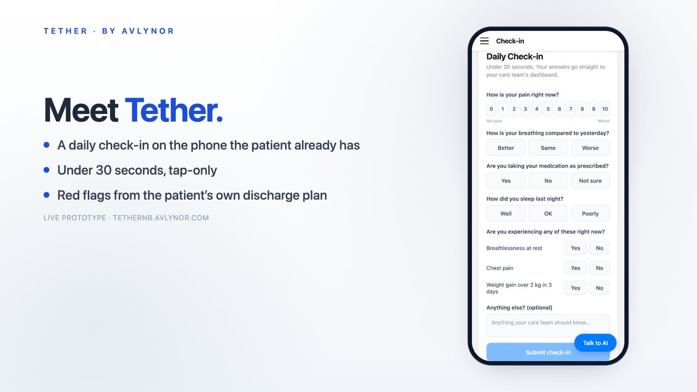

Tether
- 1st of 221 teams
- Venture Cup 2026 regional finalist
- Working towards a pilot in Sweden
Tether began as my team's entry to the New York Academy of Sciences' Spring 2026 Junior Academy Challenge on Human Centered AI, and it placed first among 221 teams. Our team of six students came from Sweden, the United States, and the UAE. Tether is a clinical companion app for patients who have just been discharged from hospital. Patients check in once a day, in under 30 seconds, receive recovery instructions in plain language, and can be monitored remotely by their clinicians.
After the win, we set up Avlynor to take Tether forward, and as its Co-Founder and CTO, I built the cross-platform app for patients, clinicians, and caregivers, the Cloudflare Workers backend with secure authentication and role-based access, and the voice-analysis engine.
The voice work is an active research program, not a validated clinical tool. We are investigating whether changes in a patient's voice, measured against their own baseline, can give an earlier signal of deterioration. We are now working towards a first pilot in hospital discharge wards in Sweden. Avlynor was also a Venture Cup 2026 regional finalist, one of 10 startups selected in Region Syd, southern Sweden, from 264 entries.